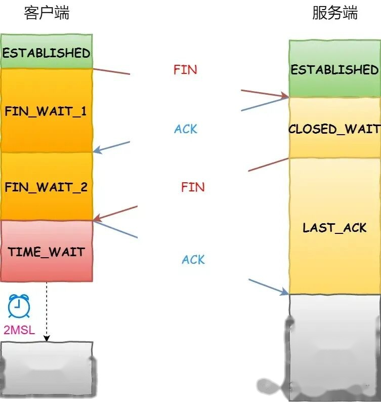

问题背景
下图所示的状态机展示了通信双方建立 TCP 连接之后的状态转换过程（图片来源: tcpipguide.com）。
通信双方主动发起关闭连接的一端，存在 TIME_WAIT 状态，被动接受关闭连接的一端，会进入 CLOSE_WAIT 状态。
处于 TIME_WAIT 状态的一端，主要浪费两种资源：
- 端口号（主要资源）
- 系统资源（文件描述符、内存资源、CPU 资源、线程资源），对于现代化硬件来说，这点资源可以忽略不计
四次挥手过程
以客户端主动关闭连接为例，先来看下经典的”四次挥手”过程：
- 第一次挥手：当客户端没有要发送的数据时，向服务端发送
FIN消息，客户端进入FIN_WAIT_1状态 - 第二次挥手：服务端收到客户端的
FIN消息之后，进入CLOSE_WAIT状态，然后向客户端发送ACK消息，客户端收到ACK消息之后进入FIN_WAIT_2状态 - 第三次挥手：当服务端没有要发送的数据时，向客户端发送
FIN消息，然后服务端进入LAST_ACK状态 - 第四次挥手：客户端收到服务端的
FIN消息之后，进入TIME_WAIT状态，然后向服务端发送ACK消息，服务端收到ACK消息进入CLOSED状态
客户端等待 2 个 MSL 时间后进入 CLOSED 状态。
为什么是 2 个 MSL
客户端需要维护一个 TIME_WAIT 状态长达 2 个 MSL 时间，以 Linux 5.0 代码为例，也就是 2 分钟：
// https://github.com/torvalds/linux/blob/1c163f4c7b3f621efff9b28a47abb36f7378d783/include/net/tcp.h#L121
#define TCP_TIMEWAIT_LEN (60*HZ) /* how long to wait to destroy TIME-WAIT state, about 60 seconds */之所以采用这种机制，主要是为了避免发生下面两个问题：
- 防止被动关闭连接的一端，延迟的数据被后续使用相同四元组的 TCP 连接接收
- 防止被动关闭连接的一端，发出的 FIN 消息没有收到对应的 ACK 消息，而在新连接到来的时候发送 RST 消息
下面就这两个问题来进行分析说明。
第一个问题：延迟数据干扰新连接
简单来说，就是防止旧的 TCP 连接，因为延迟到达的报文，而干扰到了复用相同四元组的新连接。
四元组定义
| 字段 | 说明 |
|---|---|
| 客户端 | 客户端 IP |
| 客户端端口 | 客户端端口号 |
| 服务端 | 服务端 IP |
| 服务端端口 | 服务端端口号 |
场景示例
假设客户端在主动关闭连接前，服务端发送了一个 seq = 1001 的数据包 A，但是由于网络原因一直没有送达到客户端（也就是说，该数据包延迟了）。
如果客户端没有 TIME_WAIT 状态，那么客户端第四次挥手后，此时客户端会直接进入 CLOSED 状态，但延迟的数据包 A 依然没有到来。
这时客户端又向服务端发起新的连接，很巧的是，这个新连接和刚才（已关闭）的旧连接使用了同样的端口（复用），于是新连接和旧连接的四元组变成了一样的。
新连接建立完成后，旧连接上面的延迟数据包 A 到了（新连接），这时就会产生严重的问题…
通过 TIME_WAIT 状态，发起主动关闭连接的一端会等待 2 个 MSL 时间，这个时间足够长，可以最大限度消除延迟的数据包可能对新（复用端口）的连接造成影响，TIME_WAIT 状态下接收到的延迟数据包会被直接丢弃。
极端情况分析
这里考虑一个极端的（小概率）问题：经过 2 个 MSL 时间之后，延迟的数据包 A 到达了，并且其 Seq 正好位于新连接的接收窗口内，那么新连接（TCP 传输层）会直接将整个数据包转交到上层应用吗？
根据应用层安全（是否加密）程度，分为两种情况：
- 未加密：那么就会干扰应用数据，例如源数据为”我的头像牛 X 吗？”，因为延迟的数据包，在”头”字后面插入了一个逗号，变成了”我的头，像牛 X 吗？”
- 已加密（例如使用了 HTTPS）：TLS 会校验数据完整性，那么显然数据包 A 是无法通过校验的，然后被直接丢弃，HTTPS 连接就此中断
第二个问题：FIN 未确认导致新连接被拒绝
简单来说，就是防止旧的 TCP 连接在第四次挥手中发出的 ACK 消息没有被对端收到，而导致复用相同四元组的新连接在和对端建立连接时被拒绝。
场景示例
客户端第四次挥手时向服务端发送 ACK 消息，但是这个 ACK 消息因为网络原因一直未送达，所以服务端的状态停留在了 LAST_ACK，而不是正常的 CLOSED 状态。
如果客户端没有 TIME_WAIT 状态，那么客户端第四次挥手后，此时客户端会直接进入 CLOSED 状态，但是此时服务端认为这条连接依然是有效的（还未彻底断开）。
这时客户端又向服务端发起新的连接，很巧的是，这个新连接和刚才（已关闭）的旧连接使用了同样的端口（复用），于是新连接和旧连接的四元组变成了一样的。
服务端收到了客户端的新连接建立时发送的 SYNC 消息，在服务端看来，这其实是一条旧的有效连接（因为新连接和旧连接的四元组是一样的），所以会直接返回 RST 消息，拒绝新连接的建立（连接过程到此终止）。
通过 TIME_WAIT 状态，发起主动关闭连接的一端会等待 2 个 MSL 时间，这个时间足够长，那么服务端可能会出现两种情况：
- 收到了客户端的
ACK消息，正常关闭连接，进入CLOSE状态 - 没有收到客户端的
ACK消息，重新发送FIN消息关闭连接并等待新的ACK消息（重新执行第三次、第四次挥手）
问题场景
分析完了 TIME_WAIT 状态的作用之后，什么场景下会出现大量的 TIME_WAIT 状态连接呢？
通信双方主动发起关闭连接的一端，存在 TIME_WAIT 状态，最经典的场景就是并发压力测试。
当我们在本地（客户端）启动并发压力测试时，通常会设置成百上千的并发连接去访问服务端接口，这些连接会快速且大量消耗 TCP 连接资源，每个连接在完成接口请求后会立即进入 TIME_WAIT 状态。
例如，在 Linux 系统中，可以使用 netstat 命令来查看各个不同状态的网络连接：
$ netstat -ant | grep TIME_WAIT
# 输出如下
tcp6 0 0 1.1.1.1:443 127.0.0.1:59490 TIME_WAIT
tcp6 0 0 1.1.1.1:443 127.0.0.1:59472 TIME_WAIT
tcp6 0 0 1.1.1.1:443 127.0.0.1:59480 TIME_WAIT
tcp6 0 0 1.1.1.1:443 127.0.0.1:59514 TIME_WAIT
tcp6 0 0 1.1.1.1:443 127.0.0.1:59484 TIME_WAIT
tcp6 0 0 1.1.1.1:443 127.0.0.1:59520 TIME_WAIT这类问题如何解决，后面再专门写一篇高性能网络编程中 TCP 调优的文章 :-)。
❓ 思考
如果系统中出现大量的 CLOSE_WAIT 状态连接，可能原因是什么呢？如何解决？